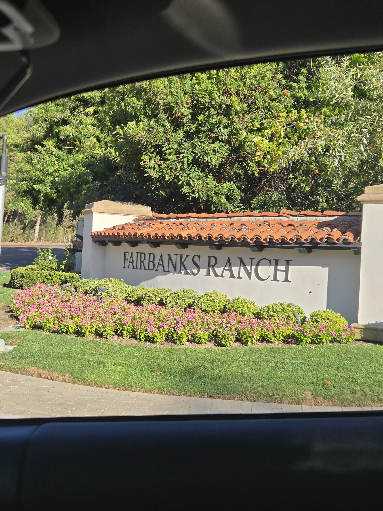
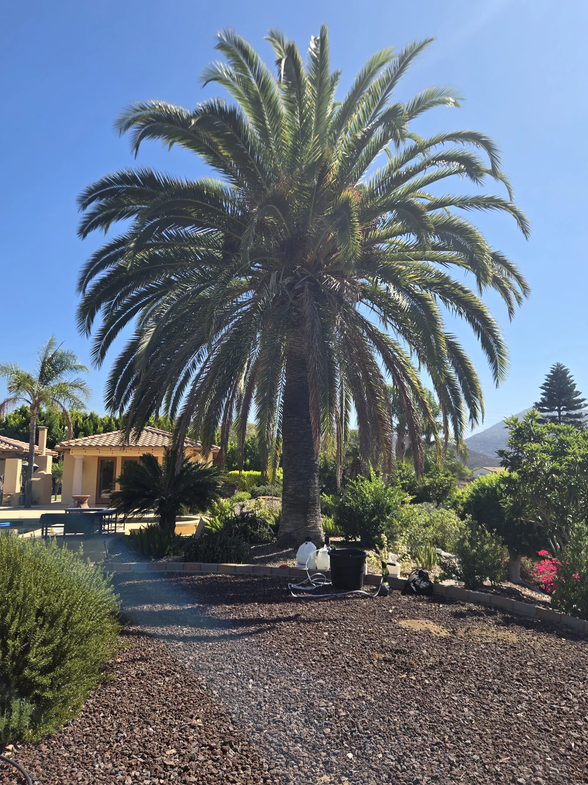
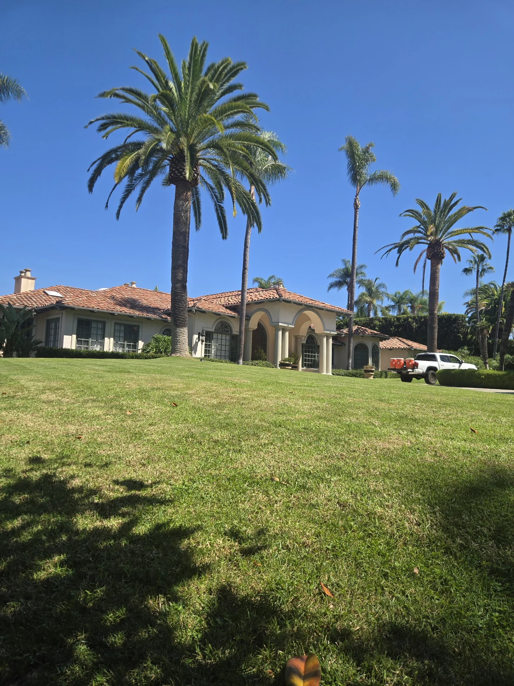
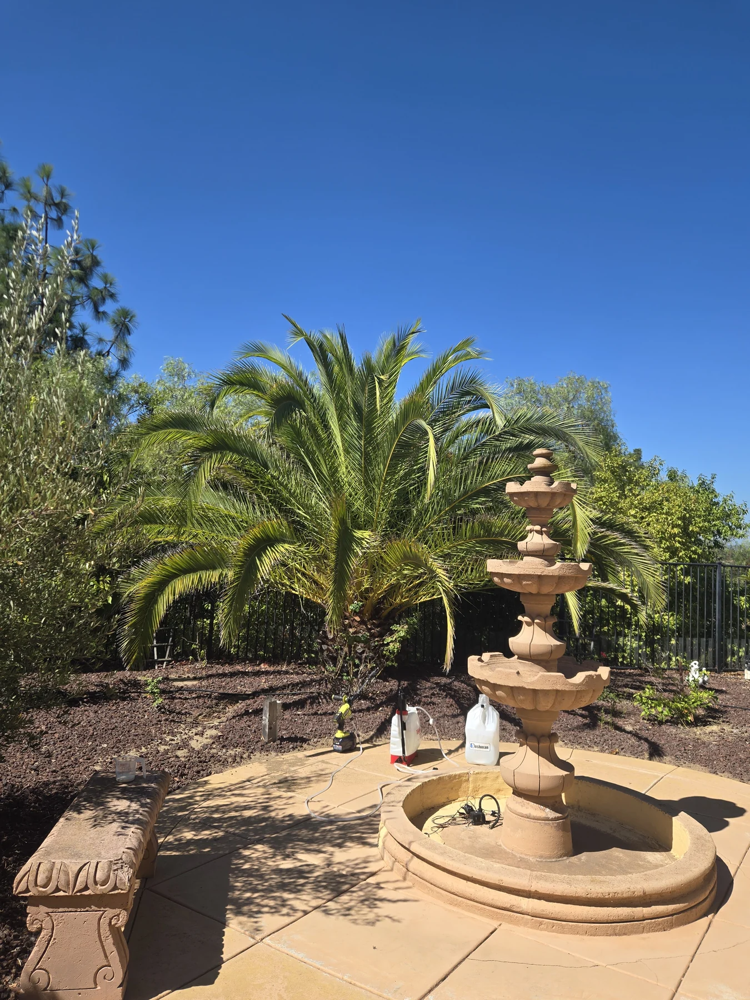
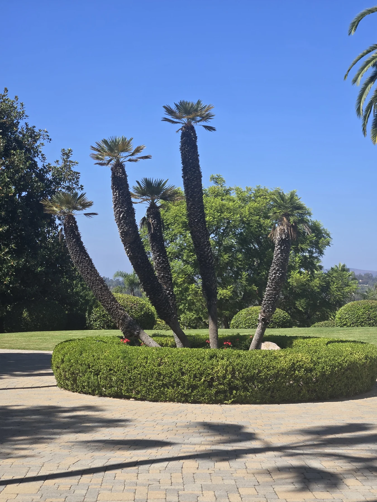
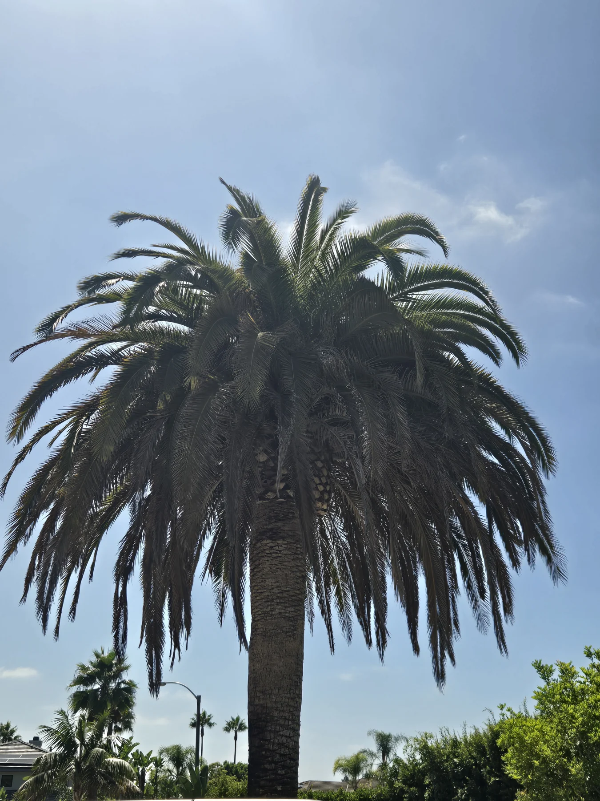
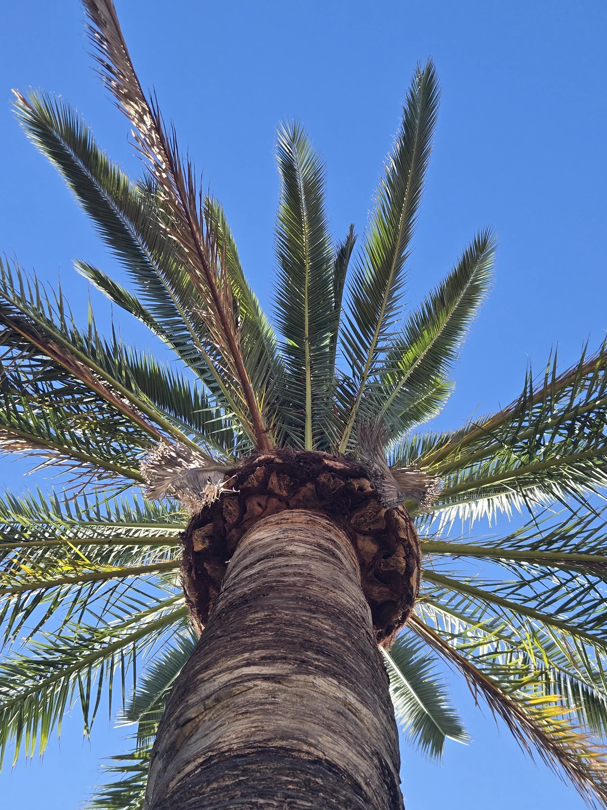

September has taken me through some beautiful residential landscapes, treating palms that give these properties much of their character. Tall Canary Island date palms frame the homes, shade the gardens and stand above the pools. They are worth protecting.
South American palm weevil is a real concern here in San Diego County, particularly for Canary Island date palms. I'm glad these owners called and got their palms under treatment. Waiting for obvious decline can mean losing valuable time.

Getting the palms under treatment
The photographs below come from recent treatment visits at three properties. Each landscape is different, but the purpose of the work is the same: give the palms a better chance against a pest that has already taken too many of them locally.


Treatment is the focal point of these visits. I check the palms and the conditions around them, carry out the appropriate treatment, and record the work. A mixed collection also needs attention to the individual species; the smaller palms matter to the landscape too.


Following through between treatments
Protection needs follow-through. Alongside the treatment record, I take photographs of the whole palm and closer views into the crown. On return visits, I compare those views for changes in new growth, color and frond position, then decide whether anything needs closer attention.


A photograph cannot tell me everything happening inside a palm, and treatment cannot guarantee an outcome. That is why regular monitoring belongs alongside treatment. If an owner notices a change between visits, I want them to call rather than wait for the next appointment.
These are palms people have lived with for years. Getting them under treatment now, and staying with their care over time, is the work I want SDPP to be known for.
For more on the local pest and prevention, see UC Agriculture and Natural Resources' palm weevil management guidance.